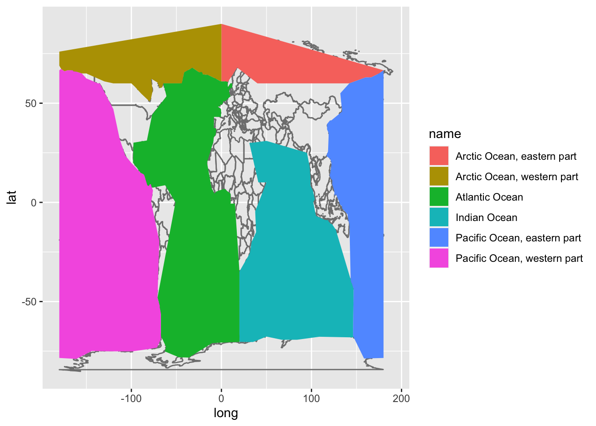
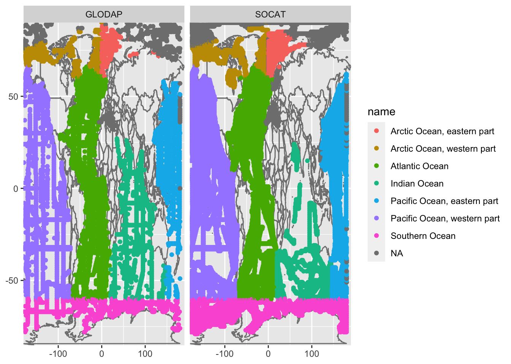
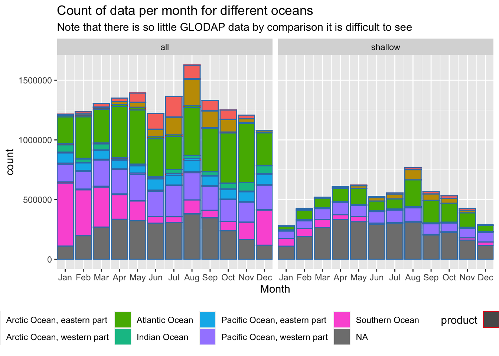
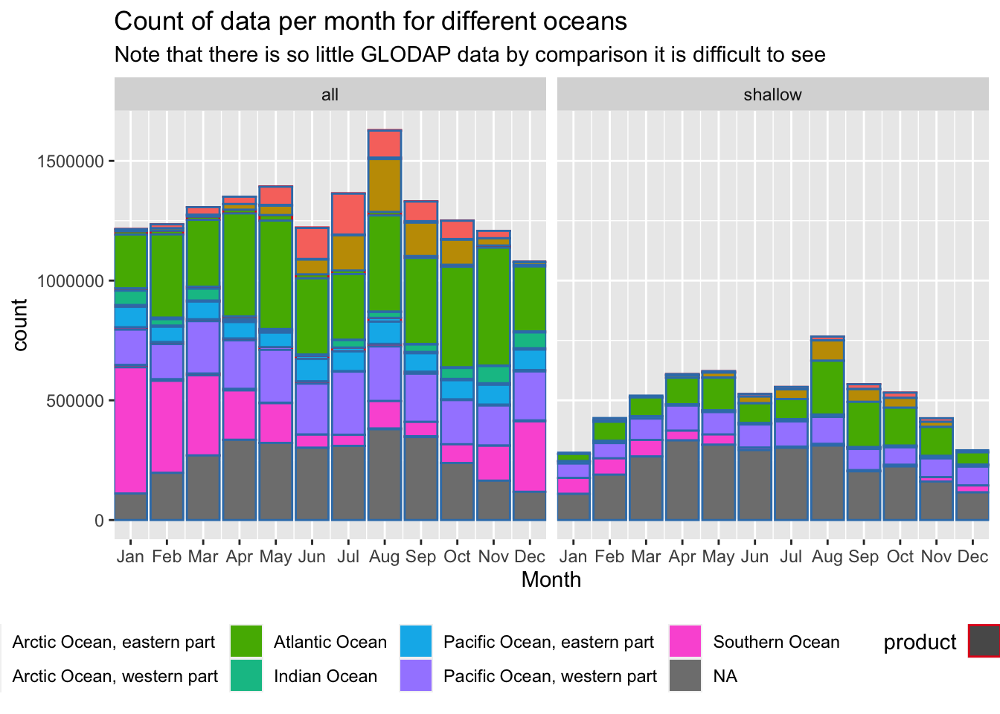

SOCAT-GLODAP
Jean-Pierre Gattuso
11 August 2021
Last updated: 2021-08-11
Checks: 7 0
Knit directory: FACE-IT/
This reproducible R Markdown analysis was created with workflowr (version 1.6.2). The Checks tab describes the reproducibility checks that were applied when the results were created. The Past versions tab lists the development history.
Great! Since the R Markdown file has been committed to the Git repository, you know the exact version of the code that produced these results.
Great job! The global environment was empty. Objects defined in the global environment can affect the analysis in your R Markdown file in unknown ways. For reproduciblity it’s best to always run the code in an empty environment.
The command set.seed(20210216) was run prior to running the code in the R Markdown file. Setting a seed ensures that any results that rely on randomness, e.g. subsampling or permutations, are reproducible.
Great job! Recording the operating system, R version, and package versions is critical for reproducibility.
Nice! There were no cached chunks for this analysis, so you can be confident that you successfully produced the results during this run.
Great job! Using relative paths to the files within your workflowr project makes it easier to run your code on other machines.
Great! You are using Git for version control. Tracking code development and connecting the code version to the results is critical for reproducibility.
The results in this page were generated with repository version 677a8e9. See the Past versions tab to see a history of the changes made to the R Markdown and HTML files.
Note that you need to be careful to ensure that all relevant files for the analysis have been committed to Git prior to generating the results (you can use wflow_publish or wflow_git_commit). workflowr only checks the R Markdown file, but you know if there are other scripts or data files that it depends on. Below is the status of the Git repository when the results were generated:
Ignored files:
Ignored: .Rhistory
Ignored: .Rproj.user/
Ignored: users/gattuso/figure/
Untracked files:
Untracked: .DS_Store
Untracked: users/gattuso/socat-glodap_jpg.html
Untracked: users/gattuso/socat-glodap_jpg_files/
Unstaged changes:
Modified: analysis/acid.css
Note that any generated files, e.g. HTML, png, CSS, etc., are not included in this status report because it is ok for generated content to have uncommitted changes.
These are the previous versions of the repository in which changes were made to the R Markdown (analysis/socat-glodap.Rmd) and HTML (docs/socat-glodap.html) files. If you’ve configured a remote Git repository (see ?wflow_git_remote), click on the hyperlinks in the table below to view the files as they were in that past version.
| File | Version | Author | Date | Message |
|---|---|---|---|---|
| Rmd | 677a8e9 | Robert | 2021-08-11 | Merge |
| Rmd | 937e36a | Robert | 2021-08-11 | Updated the SOCAT-GLODAP comparison to use improved ocean borders |
| Rmd | 28f7fe2 | Jean-Pierre Gattuso | 2021-08-06 | Now reads rds files |
| Rmd | 11b0677 | Robert | 2021-08-05 | SOCAT-GLODAP comparison |
| html | 3992686 | robwschlegel | 2021-02-18 | Build site. |
| Rmd | 4f6d4e1 | Robert | 2021-02-17 | Improvements to base workflowr appearance |
| Rmd | f9244d5 | Robert | 2021-02-17 | Re-built site. |
| Rmd | 600bca1 | Jean-Pierre Gattuso | 2021-02-16 | monthly distribution |
| Rmd | 6400bc8 | Jean-Pierre Gattuso | 2021-02-16 | Added monthly distribution |
| Rmd | 91e565e | Jean-Pierre Gattuso | 2021-02-16 | Added plots |
| Rmd | 8e7108b | Jean-Pierre Gattuso | 2021-02-16 | repair the mess |
| Rmd | d990a48 | Jean-Pierre Gattuso | 2021-02-16 | new sync |
| Rmd | 68470f2 | robwschlegel | 2021-02-16 | Moved the socat-glodap file to analysis folder because it is an .Rmd file |
[1] "en_US.UTF-8/en_US.UTF-8/en_US.UTF-8/C/en_US.UTF-8/en_US.UTF-8"
Overview
The world ocean is 361,132,000 km2 (https://en.wikipedia.org/wiki/Ocean#Physical_properties). According to Wikipedia the Arctic Ocean is about 14,056,000 km2. Calculation of the surface area of the Arctic Ocean using GMT (script below):
- north of 60°N: 1.6751e+07 km2, or 4.6% of the global ocean.
- north of 75°N: 7.11213e+06 km2, or 2% of the global ocean.
SOCAT Product


SOCAT v2021 has 15072930 records of pCO2water_SST_wet [uatm], including:
- 598462 in the Arctic Ocean shelf waters (North of 60°N and shallower than 200 m), or 4% of the total number of records
- 71266 in the Arctic Ocean shelf waters (North of 75°N and shallower than 200 m), or 0.5% of the total number of records
- 78.9% of the data have been collected over 4 months (June to September) and almost no data were collected from November (108) to April (0).
GLODAP product


GLODAP v2.2021 has 510967 records of TCO2, including:
- 17067 in the Arctic Ocean shelf waters (North of 60°N and shallower than 200 m), or 3.3% of the total number of records
- 3369 in the Arctic Ocean shelf waters (North of 75°N and shallower than 200 m) or 0.7% of the total number of records
- 77.3% of the data have been collected over 4 months (June to September) and no data have been collected from November to March.
Comparison
With the Arctic region investigated for both products we now want to compare them for the Arctic, Atlantic, Indian, Pacific, and Southern oceans. For both the full oceans as well as coastal (<= 200 m bottom depth) values. To do so we will use the bottom depths accompanied by the products, and will define very rough bounding boxes for the oceans.
 

sessionInfo()R version 4.1.0 (2021-05-18)
Platform: x86_64-apple-darwin17.0 (64-bit)
Running under: macOS Big Sur 10.16
Matrix products: default
BLAS: /Library/Frameworks/R.framework/Versions/4.1/Resources/lib/libRblas.dylib
LAPACK: /Library/Frameworks/R.framework/Versions/4.1/Resources/lib/libRlapack.dylib
locale:
[1] en_US.UTF-8/en_US.UTF-8/en_US.UTF-8/C/en_US.UTF-8/en_US.UTF-8
attached base packages:
[1] parallel stats graphics grDevices utils datasets methods
[8] base
other attached packages:
[1] tidync_0.2.4 doParallel_1.0.16 iterators_1.0.13 foreach_1.5.1
[5] data.table_1.14.1 forcats_0.5.1 stringr_1.4.0 dplyr_1.0.7
[9] purrr_0.3.4 readr_2.0.0 tidyr_1.1.3 tibble_3.1.3
[13] ggplot2_3.3.5 tidyverse_1.3.1
loaded via a namespace (and not attached):
[1] httr_1.4.2 maps_3.3.0 bit64_4.0.5 vroom_1.5.3
[5] jsonlite_1.7.2 modelr_0.1.8 assertthat_0.2.1 highr_0.9
[9] cellranger_1.1.0 yaml_2.2.1 pillar_1.6.1 backports_1.2.1
[13] glue_1.4.2 digest_0.6.27 RColorBrewer_1.1-2 promises_1.2.0.1
[17] rvest_1.0.1 colorspace_2.0-2 plyr_1.8.6 htmltools_0.5.1.1
[21] httpuv_1.6.1 pkgconfig_2.0.3 broom_0.7.8 haven_2.4.1
[25] scales_1.1.1 whisker_0.4 later_1.2.0 tzdb_0.1.2
[29] git2r_0.28.0 farver_2.1.0 generics_0.1.0 ellipsis_0.3.2
[33] withr_2.4.2 cli_3.0.1 magrittr_2.0.1 crayon_1.4.1
[37] readxl_1.3.1 evaluate_0.14 fs_1.5.0 ncdf4_1.17
[41] fansi_0.5.0 xml2_1.3.2 tools_4.1.0 hms_1.1.0
[45] lifecycle_1.0.0 munsell_0.5.0 reprex_2.0.0 compiler_4.1.0
[49] RNetCDF_2.4-2 rlang_0.4.11 grid_4.1.0 rstudioapi_0.13
[53] labeling_0.4.2 rmarkdown_2.9 gtable_0.3.0 codetools_0.2-18
[57] DBI_1.1.1 R6_2.5.0 ncmeta_0.3.0 lubridate_1.7.10
[61] knitr_1.33 bit_4.0.4 utf8_1.2.2 workflowr_1.6.2
[65] rprojroot_2.0.2 stringi_1.7.3 Rcpp_1.0.7 vctrs_0.3.8
[69] dbplyr_2.1.1 tidyselect_1.1.1 xfun_0.24